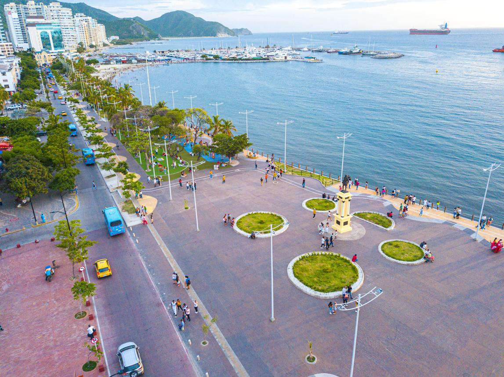

Descubre
Santa Marta
Nuevos lugares, las mismas rutas
Buscar una ruta
Buscar ruta
Lugares turísticos destacados
Ver todosConoce lugares increíbles de Santa Marta.

Nuevos lugares, las mismas rutas
Conoce lugares increíbles de Santa Marta.